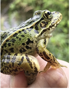

(백엔드 애들이 받아올 사용자 아이디)님 로그아웃
Reptile Test

Q4. 참개구리 암컷과 수컷에 다른 점으로 옳은 것은 무엇인가요?
1.
크기가 비슷하다.
2. 암컷이 울음 주머니가 하나 더 많다.
3. 수컷은 4월에만 논에 나온다.
4. 등면의 색깔이 많이 다르다.
2. 암컷이 울음 주머니가 하나 더 많다.
3. 수컷은 4월에만 논에 나온다.
4. 등면의 색깔이 많이 다르다.